|
|
新闻荣誉第1季 新闻荣誉第2季1、神经第一版已于2014年9月在香港四季出版社出版，书号：ISBN978-988-13762-1-3 神经已在香港特区政府康乐及文化事务署书刊注册组注册，任何人可电话2180 9146或邮件bro@lcsd.gov.hk查询。 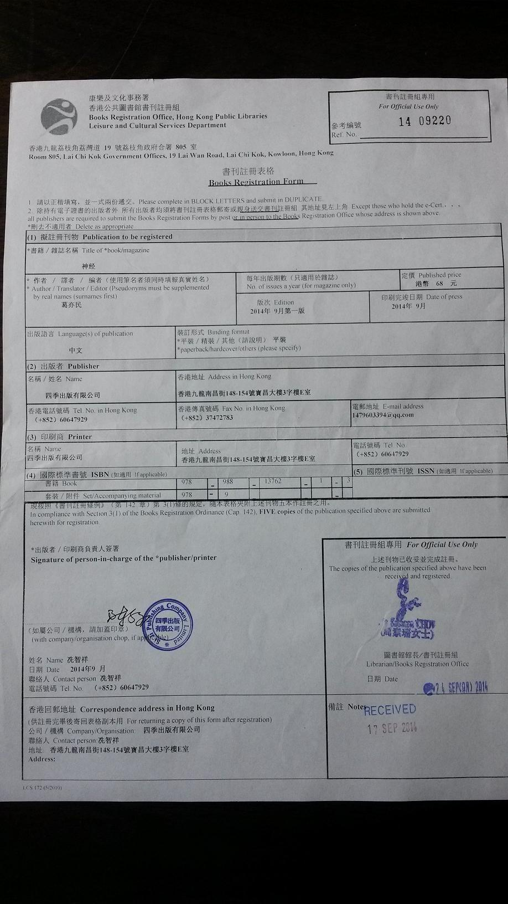 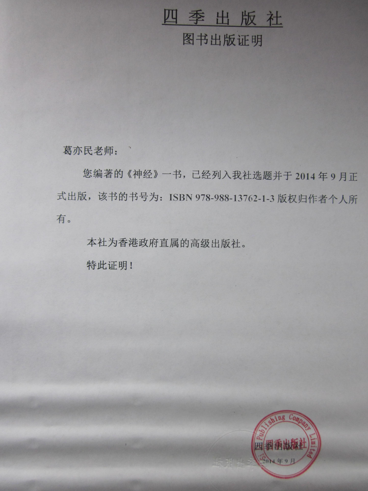 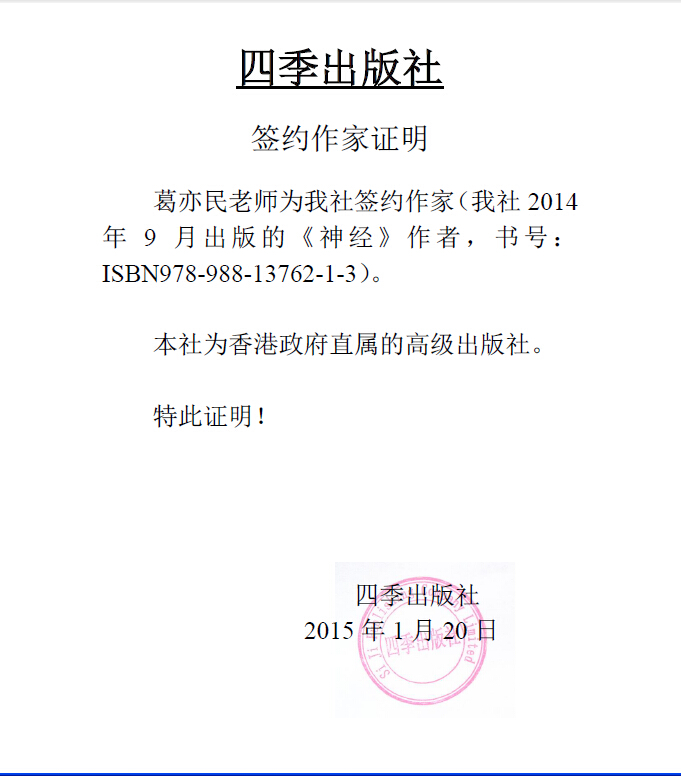 香港特�e行政�^政府���蟮�4��特�e副刊�鹊摹断愀塾∷���刊目��》。 https://www.gld.gov.hk/egazette/pdf/20151939/cs42015193957.pdf
同�r按下 Ctrl 及 F �I 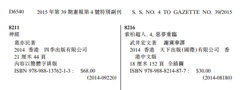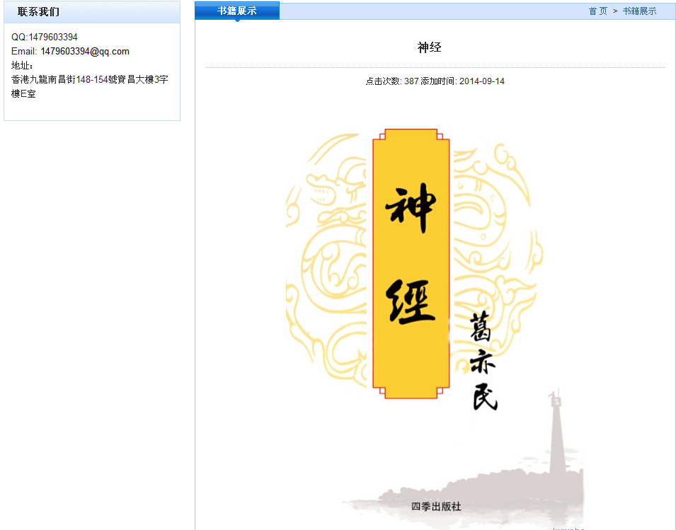 2、肥罗是否转会扑朔迷离 米兰皇马究竟谁在说谎 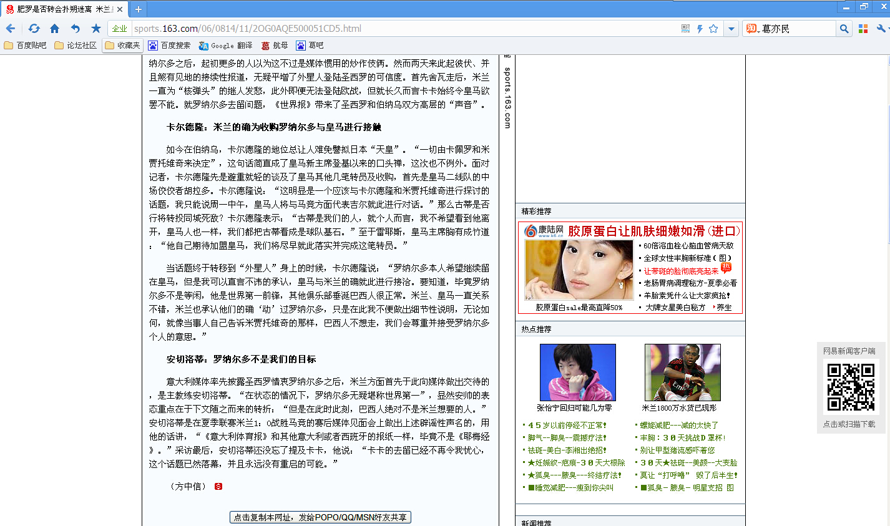 3、泡泡网新闻：而在百度“神吧”中，更有网友发表评论认为“2019年地球将被终结”一说恰巧验证了《耶梅经》中有关世界末日的预言。
社会化大生产和互联网大革命-天天快报-腾讯网 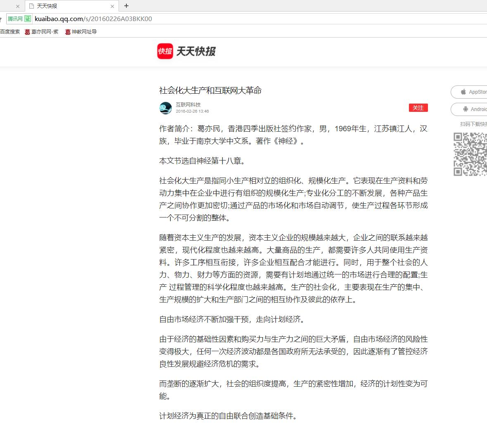 4、葛亦民是镇江38位文化艺术名人之一 5、名人简历：葛亦民 互联网宗教家思想家活动家，基督徒作家，男，1969年生，中国江苏镇江人，毕业于南京大学中文系。著有现代先知书《葛亦民经》，有人说是圣经修正案。他的思想两大来源：基督教和共产主义。 葛亦民有两条耶梅经（葛亦民经）新闻在互联网新闻门户网站发表。
6、
7、
8、
9、百度贴吧大V认证：
神教微信公众号:godjiao
10、《神经》书号： 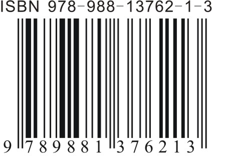 11、 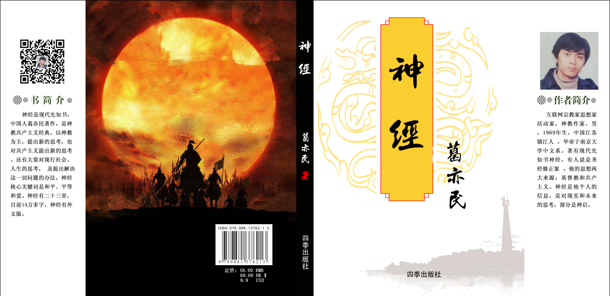
12、 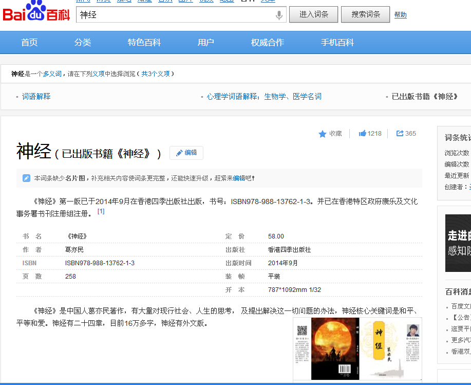 13、
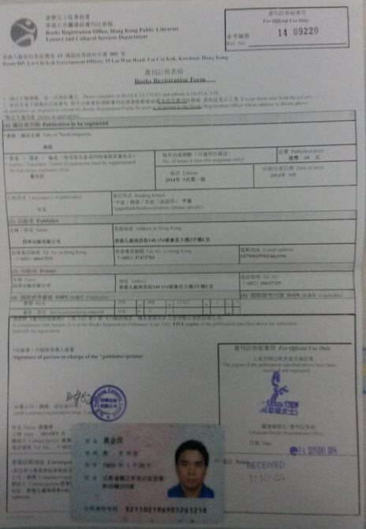 14、中国知网收录《青年文学家》期刊2015年4月11期葛亦民论文 |

 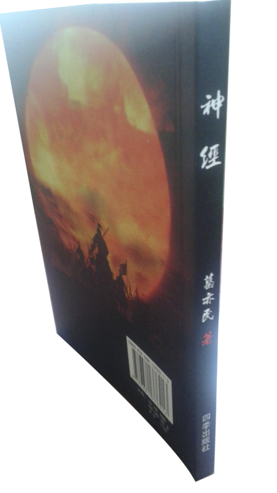
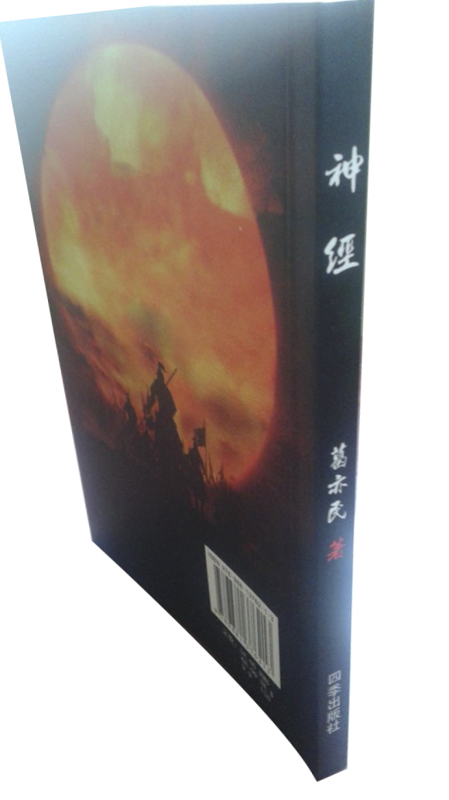